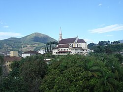

Santo Amaro da Imperatriz é um município localizado no estado de Santa Catarina, na Região Sul do Brasil, a aproximadamente 35 quilômetros de Florianópolis. A cidade possui cerca de 25 mil habitantes e é conhecida por suas águas termais, belas paisagens naturais e clima tranquilo. Cercada por montanhas e áreas de mata preservada, oferece boa qualidade de vida e é um importante destino de turismo e bem-estar.
Além do turismo, Santo Amaro da Imperatriz destaca-se por sua economia baseada no comércio, na prestação de serviços, na agricultura e no turismo. O município abriga parte do Parque Estadual da Serra do Tabuleiro, uma das maiores áreas de conservação de Santa Catarina, o que contribui para a preservação da fauna, da flora e das nascentes da região.
